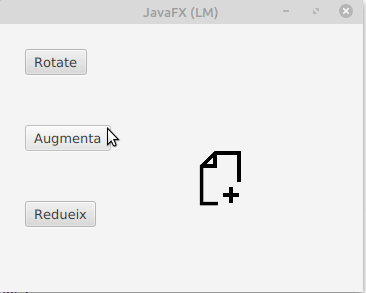

JavaFX li permet treballar amb tots els formats d’imatge populars. Usem la classe javafx.scene.image.Image per a carregar imatges des del disc dur o una font d’imatge de xarxa. Per a mostrar imatges en JavaFX, utilitzem la classe ImageView.
Els constructors de la classe Image t’ajuden a carregar dades d’imatge:
Image(InputStream inputStream)
Image(InputStream is, double requestedWidth, double requestedHeight, boolean preserveRatio, boolean smooth)
Image(String url)
Image(String url, boolean backgroundLoading)
Image(String url, double requestedWidth, double requestedHeight, boolean preserveRatio, boolean smooth)
Image(String url, double requestedWidth, double requestedHeight, boolean preserveRatio, boolean smooth, boolean backgroundLoading)
Si volem carregar imatges des de URL:
String url = "http://somedomain/images/image.png";
boolean backgroundLoading = true;
// L''imatge està sent carregada en el background
Image image = new Image(url, backgroundLoading);
Però el més comú es que carregues una imatge en el disc dur.
// Un fitxer d'imatge en el disc dur.
File file = new File("C:/MyImages/myphoto.jpg");
// --> file:/C:/MyImages/myphoto.jpg
String localUrl = file.toURI().toURL().toString();
Image image = new Image(localUrl);
ImageView és un component que l’ajuda a mostrar imatges en JavaFX. També pot aplicar efectes per a mostrar imatges com girar, acostar i allunyar, …
